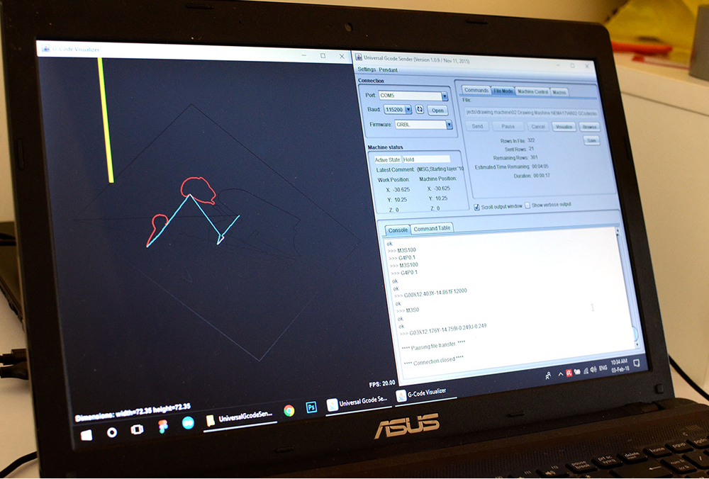
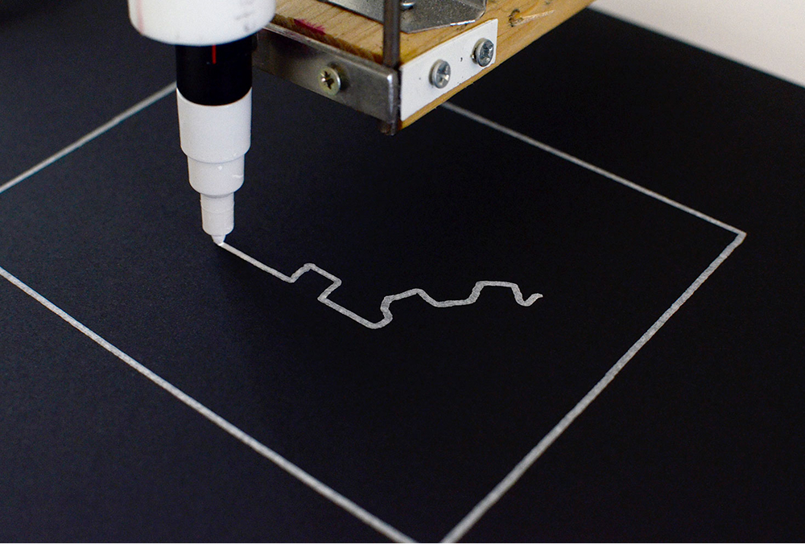
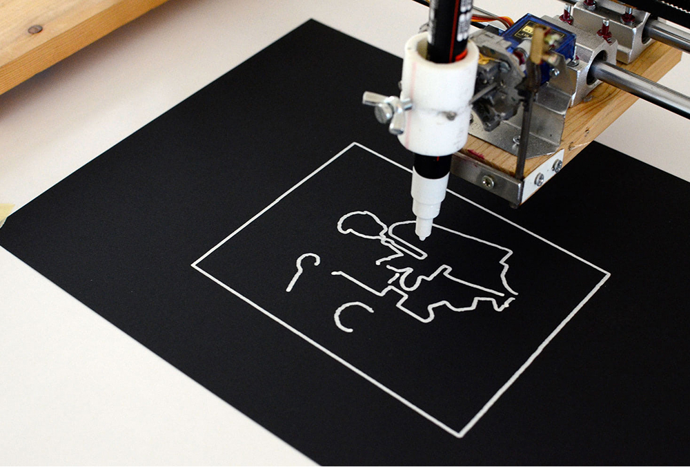
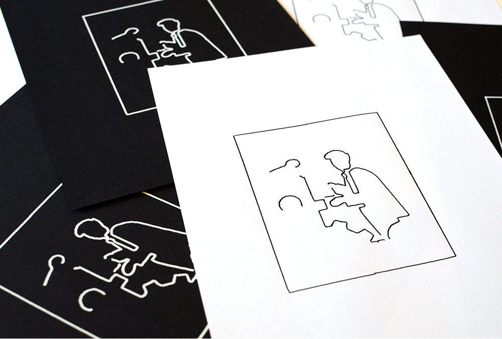
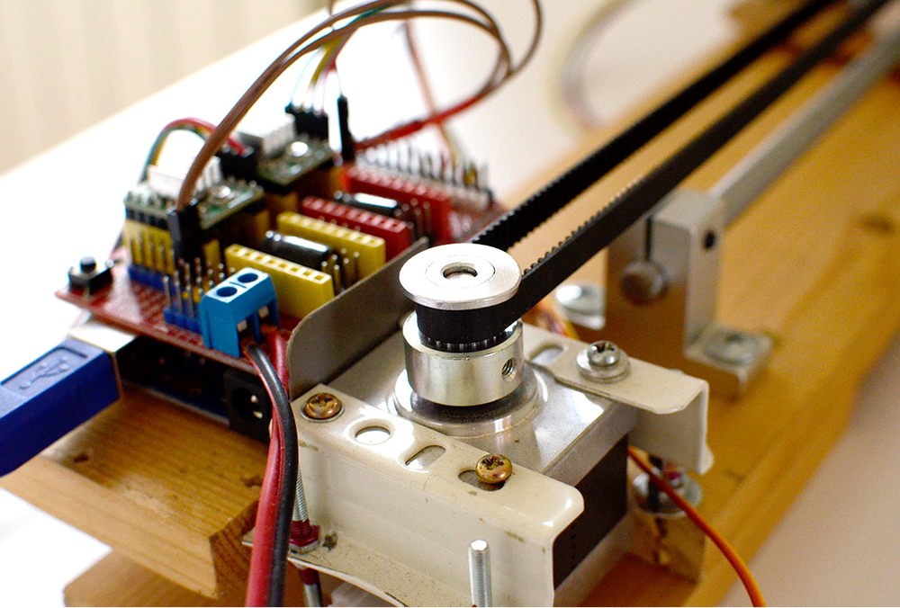
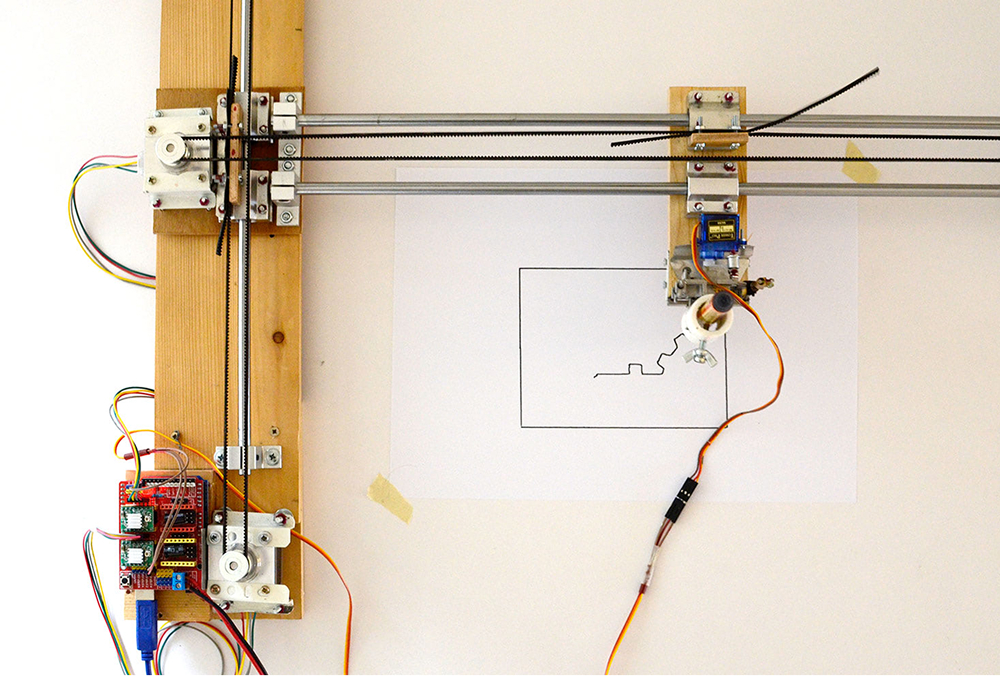
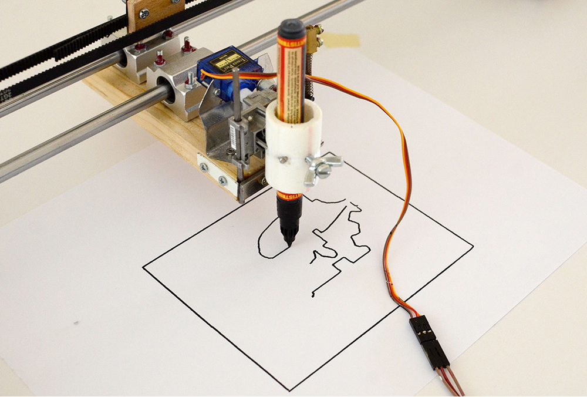

Kotrljko
Kotrljko is a drawing XY machine that I created a few years ago with the help of my father. It was one of my first attempts at hardware projects and it was a challenging journey. However, in the end, Kotrljko successfully creates drawings. From a technical perspective, Kotrljko uses two NEMA17 motors, Arduino shields with controllers, and wooden and metal parts that were handmade by my partner. On the software side, I used the Universal Gcode Sender and the Inkscape program with an add-on.






